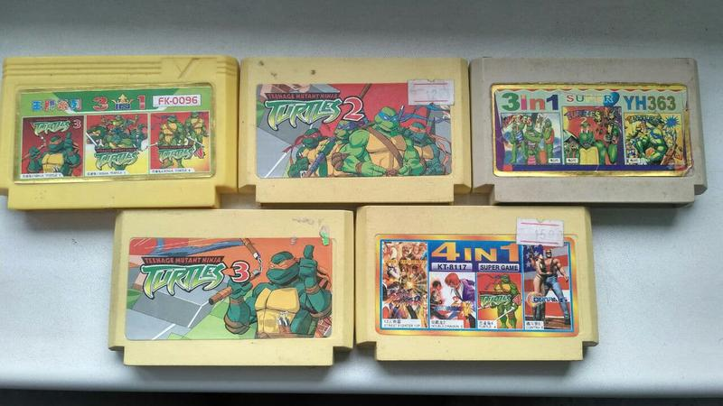

PlayBoy
PlayBoyВ этой категории вы найдете все, что связано со стратегиями на ПК – играми, где важно умение просчитать развитие событий на несколько ходов вперед, а победить соперников можно не хорошей реакцией (хотя и она важна в некоторых поджанрах), но планированием своих действий и способностью правильно использовать сильные и слабые стороны своей армии.
История
История компьютерных стратегических игр начинается с появления на Magnavox Odyssey игры Invasion, которая являлась адаптацией настольной игры «Риск». При этом с помощью консоли были реализованы сражения, по игровому процессу похожие на то, что происходило в игре Pong, а стратегическая часть игралась на настольной доске. Поэтому, в строгом смысле, эта игра не была первой стратегической, реализованной на компьютере или консоли. В 1970-х гг. многие играли в настольные стратегические игры и для них в этом плане жанр не был новым. Появление настоящих стратегических компьютерных игр произошло с выпуском микрокомпьютеров TRS-80 и Apple II, для которых началась волна адаптаций существующих настольных игр.
Magnavox Odyssey (Первая игровая консоль)
Картриджи 8-битных приставок (примерно 80-90гг)
Таблица кртриджных игр по битрейту.
| Битрейт | 8bit | 16bit |
|---|---|---|
| Игры | Mario/ Robocop/ Dr.Mario | ComixZona/ Dune/ Super Contra |
"Наше время"
Время не стоит на месте и на сегодняшний день индустрия игровых консолей и игр, подобна реакции атомного взрыва, заполоняет удаленные уголки нашей планеты, радуя своих фанатов своими новейшими разработками.
Классификация стратегий
Все компьютерные стратегии относятся к двум основным типам:
- Стратегии в реальном времени (RTS, от англ. Real Time Strategy)
- Пошаговые стратегии (TBS, от англ. Turn Based Strategy)
Пошаговые стратегии — игры, в которых игроки производят свои действия по очереди. Пошаговые стратегии появились раньше RTS и отличаются значительно большим разнообразием.Разделение игрового процесса на ходы отрывает его от реальной жизни и лишает игру динамизма, в результате чего эти игры не так популярны, как стратегии в реальном времени. С другой стороны, в TBS у игрока гораздо больше времени на размышление, во время совершения хода его ничто не торопит, что позволяет уделять больше времени планированию.
Стратегии в реальном времени - в этих стратегиях игроки производят свои действия одновременно. Они появились несколько позже пошаговых, а первой получившей известность игрой этого жанра была Dune II (1992), сюжет которой основан на одноимённом произведении Фрэнка Герберта. В настоящее время жанр стратегий в реальном времени стал весьма широк и включает игры совершенно разного типажа – от тактических варгеймов до глобальных стратегий, поэтому классические стратегии в реальном времени вроде Dune традиционно называют "классическими RTS". Особый подвид представляют собой стратегии в реальном времени с активной паузой, где игроку предоставляется возможность поставить игру на паузу и раздать необходимые приказы.
Существует ещё не сколько подвидов основных стратегических направлений:
- Тактические стратегии
- Браузерные онлайн-стратегии
- Экономические стратегии
- Экономические онлайн игры
- Варгеймы
- Глобальные стратегии
- 4X стратегии
- MOBA (Multiplayer Online Battle Arena)
- Карточные стратегии
Выводы
Стратегические игры всегда пользовались огромным спросом и популярностью среди игроманов. Эти игры всегда были, есть и будут держать в напряжении многих геймеров нашей планеты. А самое главное - это то что войны ведуться на мониторе с джойстиком в руке, а не на настоящем поле битвы и это заслуживает уважения!!!